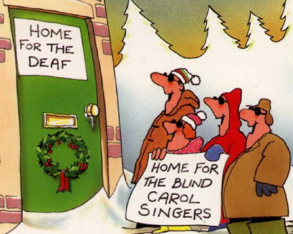

Bienvenu, MJ.
Bienvenu, MJ.

(The image above is from http://pages.ivillage.com/cl-loluv/deafhardofhearing/id20.html [Deaf humor)], which is no longer extant.)
All right! Who called me an oxymoron! What? Oh yes. I mean serious analyses of the mechanisms of Deaf humor.
Bienvenu, MJ.
Bouchauveau, G. (12/1994). Deaf humor and culture. In Erting, Carol J. et al (eds). The deaf way: Perspectives from the International Conference on Deaf Culture. Washington, DC: Gallaudet Univ. Press. ISBN: 1563680262. pp. 24-30.
Hanifin, J. et al, (1993). Deaf humour. Deaf Owl Productions. [Video 55 min]
Jacobowitz, E. L.
Klima, E. S. & Bellugi, U.
Lentz, E. M., Klima, E. S. & Bellugi, U. (1979). Wit and plays in signs. In Klima, S. & Bellugi, U. (contributor) (1988).
The signs of language. Harvard University Press. ISBN 0674807960. pp. 319-339.
Sanders, D. M. (1986). Sign language in the production and appreciation of humor by deaf children. In Sign Language Studies 15: 50. pp. 59-72.
General articles about the philosophy and translation/interpretation of humor
Attardo, S. (2002). Translation and humour: An approach based on the General Theory of Verbal Humour (GTVH).
Chalmers, D. J. (February 1989). A taxonomy of cognitive jokes.
The Translator. Volume 8, Number 2, 2002. Translating Humour (Guest-edited by Jeroen Vandaele).
Return to the table of contents for "Humor and stories for interpreters".